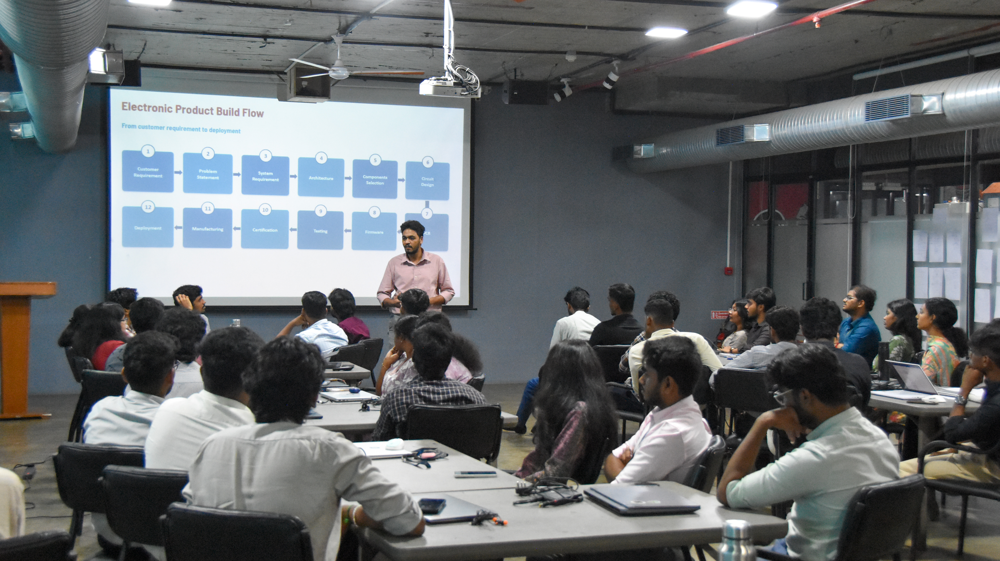

ProtoSem Journal - Week 03
Electronics Fundamentals Review and Fusion 360 Practical Assignments
This week focused on revisiting the fundamentals of electronics and digital systems while gaining practical experience with Fusion 360. The combination of theoretical learning and hands-on activities helped me understand how basic electrical concepts can connect with mechanical design, simulation, and practical engineering problem-solving.
What I learned
- Revised key electronics concepts such as voltage, current, resistance, and circuit behavior.
- Understood how different electronic components work together to form practical systems and real-world devices.
- Completed Fusion 360 assignments to improve modeling accuracy, design skills, and technical confidence.
- Connected design thinking with engineering fundamentals by applying theory to organized practical tasks.
Big takeaway
A strong engineering foundation begins with a clear understanding of the basics. When theory, practical tools, and hands-on experience are combined, even simple projects can provide valuable technical learning.
Week 3 in pictures



Learning reflection
Core electronics learning
The week started with a revision of important electronics concepts. This helped us refresh our understanding of how circuits are designed and how current moves through different components. These basics are essential because they provide the foundation for many engineering applications, including microcontrollers, automation, machine design, and other electronic systems.
Fusion 360 practical work
As the week continued, we worked on practical assignments using Fusion 360. These activities allowed us to apply organized and logical thinking to engineering design. It was helpful to understand how technical knowledge and digital design tools complement each other when developing accurate and realistic engineering models.
Final reflection: Week 3 helped me recognize the importance of combining theoretical understanding with practical execution. It reinforced that successful engineering requires clear concepts, careful analysis, attention to detail, and consistent practice. This week provided a strong foundation for more advanced design and engineering projects.